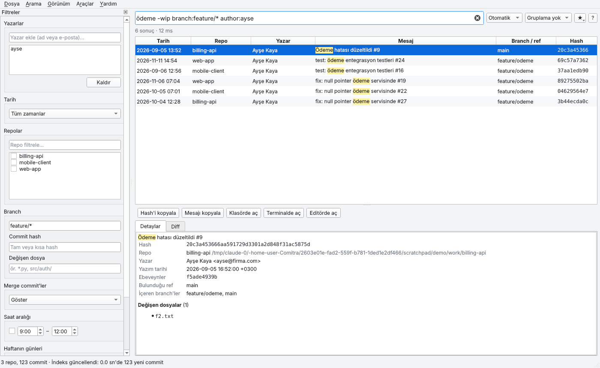

Smart full-text search
Case- and accent-insensitive, Unicode aware. Exact phrases, prefixes (login*) and exclusions (-wip).
Comitra finds every git repository on your computer, indexes the commits on all branches and lets you find them by message, author, date, branch or hash in milliseconds. No internet needed, your data never leaves your machine.
Windows 10/11 · macOS 11+ · Linux · Requires git

Find the commit that got lost among dozens of repos and hundreds of branches, from a single search box.
Case- and accent-insensitive, Unicode aware. Exact phrases, prefixes (login*) and exclusions (-wip).
Discovers all repositories in your folders automatically. Indexes local and remote branches, tags, submodules and bare repos.
Author and co-author, date ranges and presets, repository, branch (feature/*), hash, changed file, merge commits, time of day and weekday.
A local SQLite FTS5 index. Smooth scrolling through millions of results, match highlighting and grouping by repo, author or day.
Only changed repositories are rescanned. Old-dated commits arriving via fetch are never missed. Commits lost to force-pushes are flagged, not deleted.
Full message, both dates, co-authors, branches containing the commit, changed files and a colored diff in one place.
Open the repository in your file manager, terminal or editor (VS Code and others). Copy the hash with one keystroke.
No telemetry, no account, no cloud. The index lives only on your computer. Nothing touches the network except an optional git fetch.
The Windows installer needs no admin rights. The portable edition keeps its data in its own folder, so you can carry it on a USB stick.
Installation and the first index usually take less than a minute.
Download the package for your operating system. All you need is git installed.
Pick the folder that holds your projects (e.g. ~/projects). Comitra finds and indexes every repository inside.
Start typing. Results appear as you type. Narrow them down with the filter panel or the query language.
Click filters in the panel or type them. Both stay in sync instantly.
comitra-cli search# Ahmet's payment commits from the last 7 days, no WIP author:ahmet date:7d payment -wip # On feature branches, exact phrase branch:feature/* "payment error" # Friday evening, no merge commits day:fri hour:18-23 merge:hide # Commits touching a folder in October file:src/auth/ date:2026-10 # Jump straight to a short hash a1b2c3d
It's free. Choose the installer or the portable edition that runs without installing anything.
Windows 10 / 11, 64-bit
Installer (.exe) Portable (.zip)macOS 11+, Apple Silicon and Intel
Apple Silicon (.dmg) Intel (.dmg) Portable (.zip)x86_64; Ubuntu 22.04+, Fedora, Debian, Arch…
AppImage Portable (.tar.gz)All releases and release notes are on GitHub. All releases →
chmod +x Comitra-*.AppImage. Comitra needs git to be installed.Yes. Comitra is MIT-licensed, open source and completely free. No account or sign-up needed.
No. Comitra works fully offline and has no telemetry. The index is a SQLite file on your computer. If you enable it, it only runs git fetch against your own git servers.
Windows 10/11 (64-bit), macOS 11 or later (Apple Silicon and Intel) and x86_64 Linux distributions. Every platform has an installer and a portable package.
Hundreds of repositories and millions of commits are fine. A 100,000-commit repository is indexed in about 5 seconds and searches take milliseconds. Later updates only rescan repositories that changed.
Yes. All local and remote-tracking branches on your computer are indexed. Turn on "Run git fetch before updating" in settings to pick up your teammates' new commits.
Commits that are no longer reachable from any branch are flagged instead of deleted. They are hidden by default; show them with the unreachable:include filter.
The portable edition needs no installation and keeps its settings and index in a comitra-data folder next to the program. Copy the folder to a USB stick and use it on another computer.
No. Comitra only reads git folders on your computer. It doesn't matter where your repositories are hosted, or whether they are hosted at all.